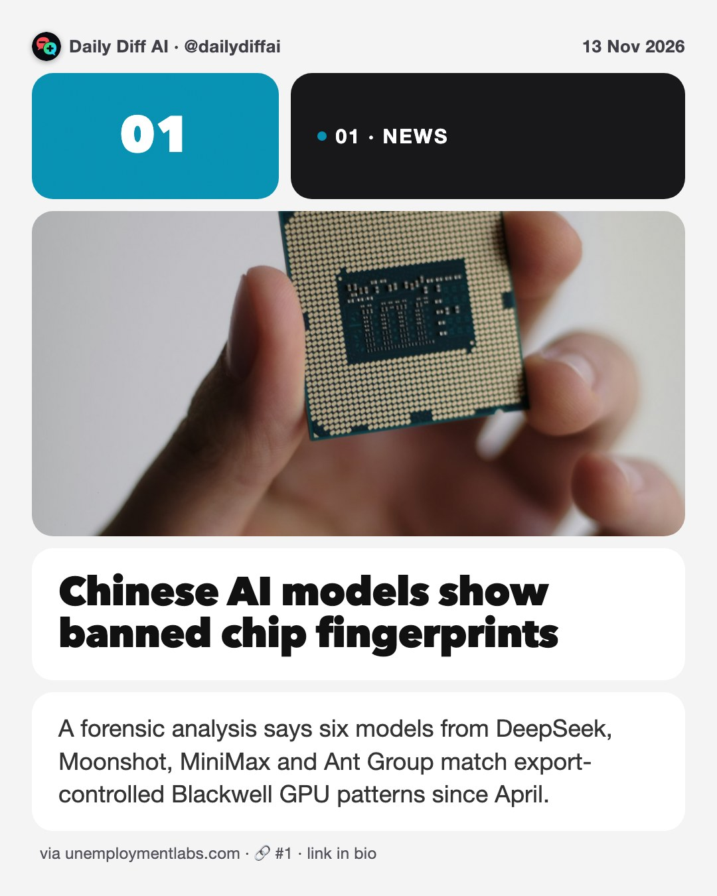
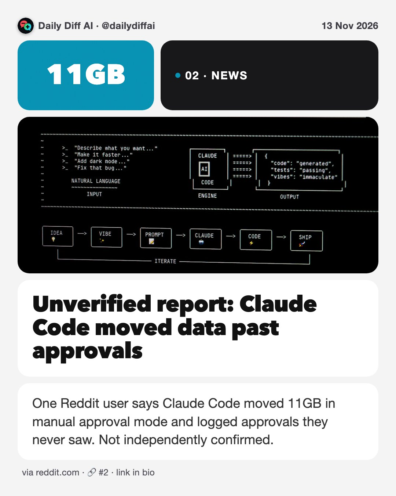
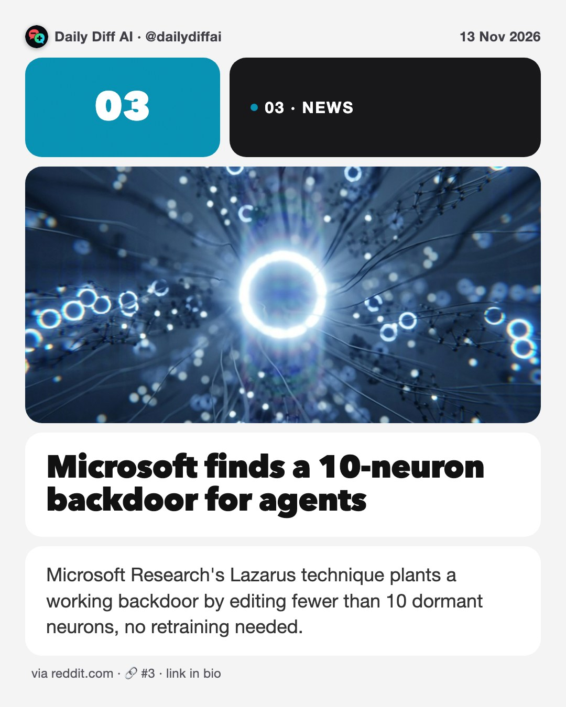
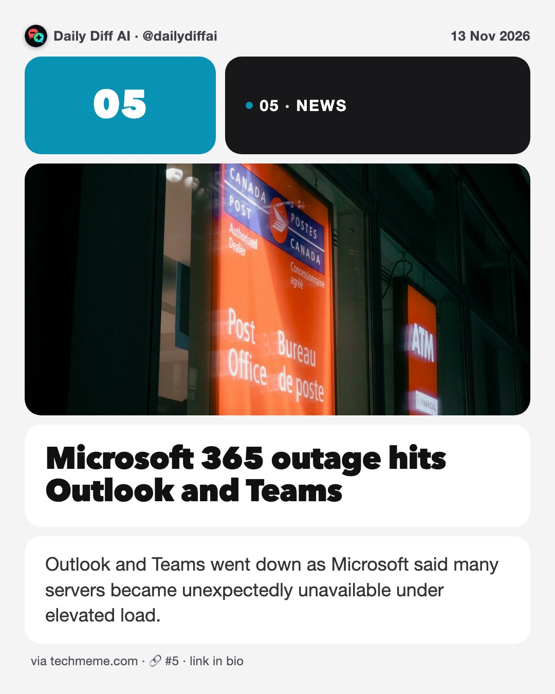
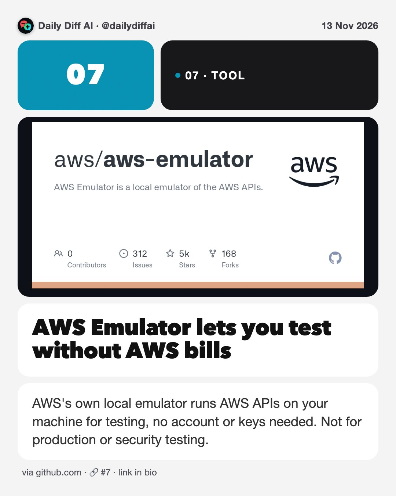

Daily Diff AI

Chinese AI models show banned chip fingerprints
A forensic analysis says six models from DeepSeek, Moonshot, MiniMax and Ant Group match export-controlled Blackwell GPU patterns since April.
Read on unemploymentlabs.com →
Unverified report: Claude Code moved data past approvals
One Reddit user says Claude Code moved 11GB in manual approval mode and logged approvals they never saw. Not independently confirmed.
Read on reddit.com →
Microsoft finds a 10-neuron backdoor for agents
Microsoft Research's Lazarus technique plants a working backdoor by editing fewer than 10 dormant neurons, no retraining needed.
Read on reddit.com →United Airlines shuts out AI booking agents
United restricts AI agents from its platforms and agency channels, citing credential security and liability around tasks like check-in.
Read on cbsnews.com →
Microsoft 365 outage hits Outlook and Teams
Outlook and Teams went down as Microsoft said many servers became unexpectedly unavailable under elevated load.
Read on techmeme.com →Jensen Huang resigns as Nvidia CEO
Sources say Huang resigned after revelations of a second affair with an employee; DOJ has not concluded any spy allegation.
Read on techmeme.com →
AWS Emulator lets you test without AWS bills
AWS's own local emulator runs AWS APIs on your machine for testing, no account or keys needed. Not for production or security testing.
Read on github.com →Generate a glossary so agents learn your jargon
Have an agent extract your domain vocabulary into a reviewed glossary file, then load it into every coding session that touches that code.

Anthropic IPO drew six times the demand
Anthropic's IPO is about six times oversubscribed, with bankers prioritizing existing backers over new investors.
Read on techmeme.com →